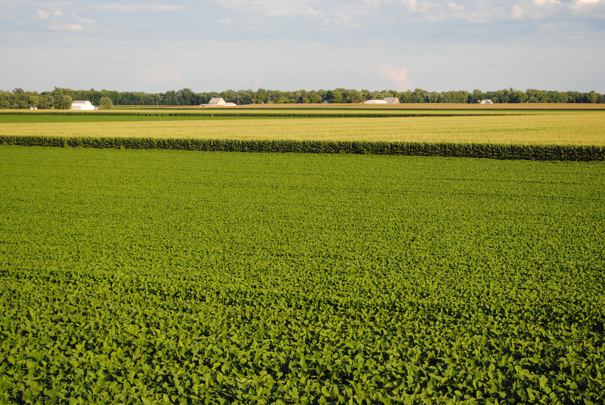
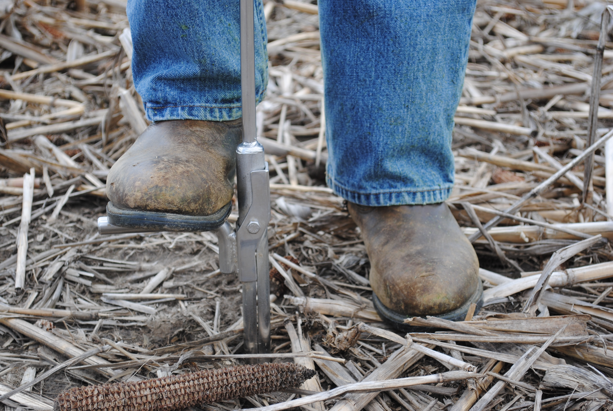
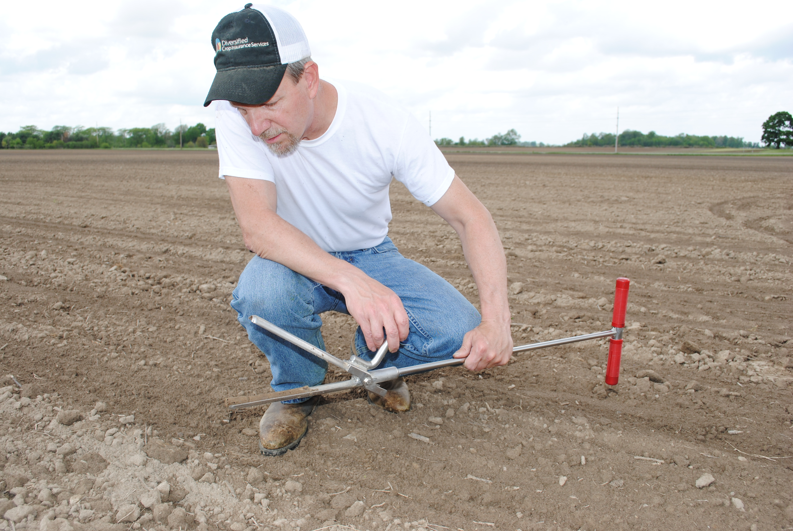
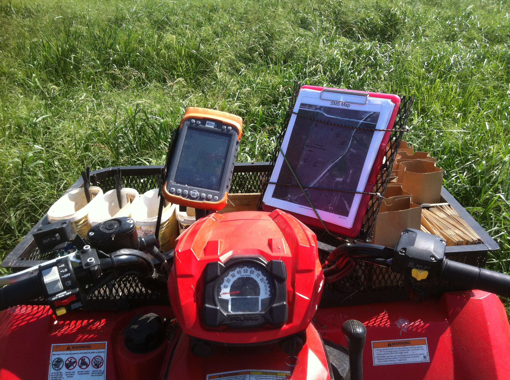

At Greene Crop Consulting, Inc., we understand your challenges to balance yield with input expense, protect your farm from loss, and navigate the obstacles of each growing season. So let us show you how we can help you protect your farm profitability and your way of life.

Greene Crop Consulting, Inc. is an independent crop consulting firm. Our mission is to help our Ag clients understand and achieve their production, financial, and risk management goals. We put the needs of our clients first.
View Our ServicesWe will conduct a full soil analysis. As a result, you can expect to increase production and maximize input dollars.
Learn More →Crop disease, crop deficiencies, and plant pests can rob bushels so we find solutions to protect land and crops.
Learn More →We use your productivity to tailor coverage to your specific needs so when disaster strikes, you are covered.
Learn More →We can visually show where you can improve in numerous areas including profitability, seed, fertility, crop inputs and operations.
Learn More →You tell us about your farming practice, goals, and challenges
Your consultant guides you to find solutions to fit your farming needs.
We work together to decide how and when to put those services to work.

Getting out early to evaluate your corn stands can pay big dividends. Learn what to look for and when to take action.

Building organic matter and improving soil structure are long-term investments that pay off through better yields and reduced input costs.

With commodity prices fluctuating, now is the time to review your coverage options and ensure your operation is protected.
Let us create a detailed plan for you and your acres today.